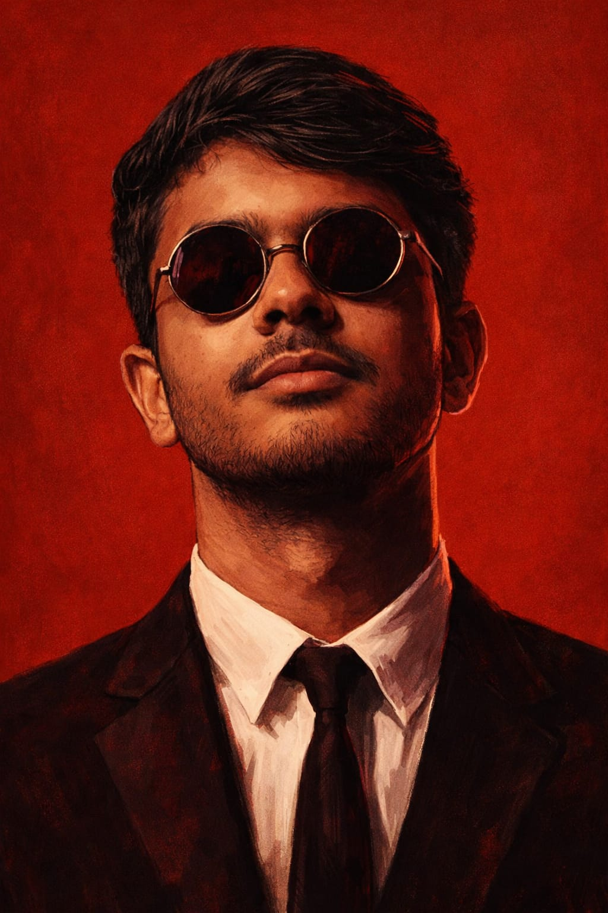

01
Programming
Python · C Programming · Graphics Programming
↗AI & MACHINE LEARNING STUDENT • PYTHON • FLASK • ML
I'm Yash, an Artificial Intelligence & Machine Learning student with hands-on experience building and deploying machine learning models and practical software projects.

Motivated AI & Machine Learning student with hands-on experience in building and deploying machine learning models.
Experienced in data preprocessing, augmentation, and using AI tools for research and documentation. Interested in applying AI to real-world problem domains.
A practical toolkit developed through coursework, experimentation and project work.
Python · C Programming · Graphics Programming
↗Machine Learning · Data Preprocessing · Data Augmentation · TensorFlow · Keras · CNN
↗Flask (Basic) · HTML · CSS · JavaScript · Git & GitHub
↗Render (Deployment) · AI tools · LLMs · ChatGPT for debugging, research and documentation
↗Building a strong foundation in computer science with a focus on artificial intelligence and machine learning.
Artificial Intelligence and Machine Learning
Hands-on work spanning machine learning, web applications and graphics programming.
A case-centric secure digital document management system for legal and investigation workflows, evolved from SecureCloudStorage into a broader platform for protected documents, evidence integrity, auditability and controlled access.
Designed and trained a CNN-based machine learning model for image classification using TensorFlow and Keras. Performed data preprocessing, labeling and augmentation on image datasets, documented model architecture and experiments, and deployed the trained model through a Flask-based web application for real-time predictions.
Developed a community platform for farmers to share queries and information. Implemented backend functionality using Flask with structured JSON-based data storage. Used LLMs such as ChatGPT to assist with content generation, summarization and user query support.
Developed a retro 2D arcade-style shooting game from scratch using C programming and Turbo C (BGI graphics), without modern game engines. Implemented player controls, bullet firing, real-time collision detection, multiple enemy types, difficulty scaling, health, scoring, respawn logic, a custom game loop and struct-based object management.
A full-stack eco-friendly pen store combining a responsive frontend, Express APIs, user authentication and a MySQL-backed product layer.
A database-driven car rental system with Express APIs, bcrypt authentication, car availability, rental workflows, payments and MySQL persistence.
An AI/NLP project concept focused on document topic modeling and classification, using Latent Dirichlet Allocation (LDA) to discover themes in text.
Have an idea or opportunity?
Nagpur, Maharashtra · +91 8010622341 · English · Hindi · Marathi